Below is a gallery of examples showing how to use DCA.
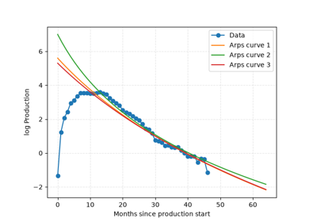
Plot an Arps curve
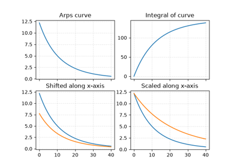
Curve methods
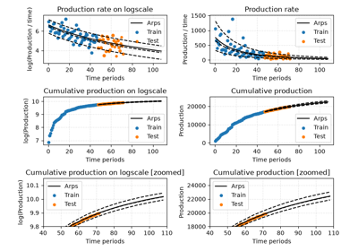
Well plotting methods
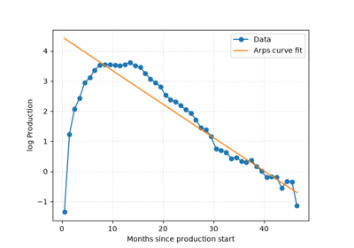
Fit an Arps curve
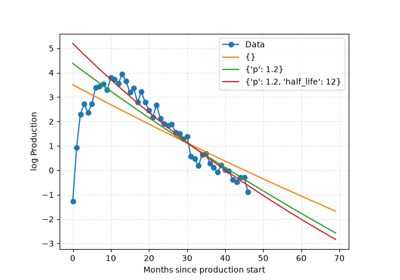
Loss function parameters
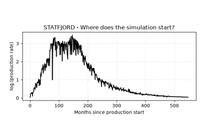
Simulation game
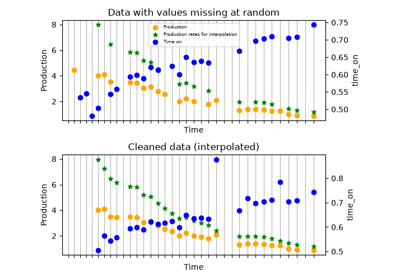
Data cleaning
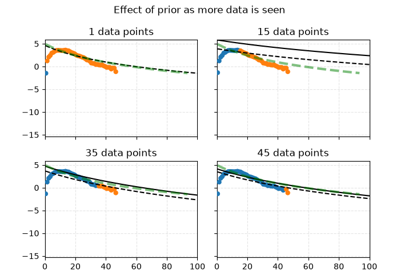
Effect of prior
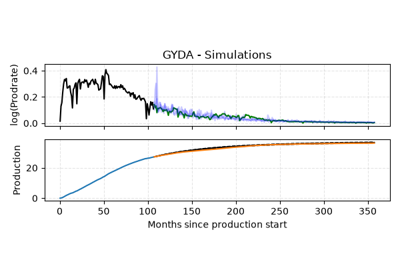
Future simulations
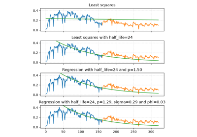
Increasing model complexity
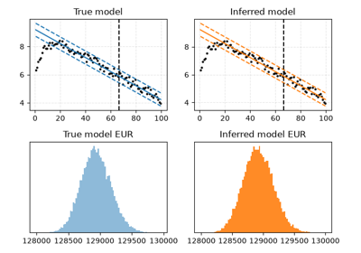
Uncertainty
Gallery generated by Sphinx-Gallery